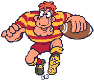

Newcastle Rugby Club 9th March 2012
Up for it were Yup, Pedro, Granpop Bill, Keithee’s up for it, Jaycee, Malc Jay, Spike, Ali G, Mothy, Mid week Tone, DCeen, McCeen, Baz, GPS-cott and 'almost rans' Richee and Craigee made a token appearance before letting the group down for the second time this year.
Jaycee, Granpop Bill and Yup met at 3ish at the Westbury where the Town Crier from the Townhouse Brewery was on tap and in fine metal. A gesture towards strolling into town was made but was hijacked when a bus turned up on route and we couldn’t refuse to jump aboard. 5 minutes later we jumped off at the Boat n Horses.
Keithee was already there, and hats off to Pedro who was also sitting alongside him sporting a trilby and a straight glass !! Jaycee wore 2 coats instead of a trilby allowing for any type of weather conditions which may be thrown our way, whilst Worzel Granpop Bill looked like he’d just escaped a tornado.


Spike and Ali G were dropped off by Mid week Tone a few minutes later and the IPA and news of retirements began to flow. Jaycee confirmed he was looking forward to working till he was 70, whilst Spike had this week accepted VR at the prime old age of 54. Oh what fun and games.
We headed off to the Castle Mona for 5ish where Timothy Taylor’s Landlord was available along with Young’s Special and Bombardier.

Brass Pots pans and ladles and other memorabilia were hanging over the bar .....


......... along with Baz, GPS-cott and Mid week Tone who had eventually arrived. Baz gleaned some good news from the landlord that he intended to buy the pub and have more real ales on tap in the future. Excellent.
We headed off through the Lyme valley and passed a skateboard park and a basket ball court before crossing ‘up and over’ a muddy field where grown-up men had been ‘trying’ to kick funny shaped balls over a bar; not the bar in the clubhouse I hasten to add. The club’s bar had been set up with barrels of ale for their 7th annual festival, which was in full swing as we arrived. This time a light bulb had been finally replaced by the door to avoid anyone misjudging the step like last year …….. agh. I remember it well.
The glasses were £2 to buy and there was no refund at the end of the session. Still, the proceeds would hopefully go towards the purchase of round balls to replace the flattened spaceship type ones they were playing with on the floodlit field outside.
Spike got his finger caught in one of his ears.


The Skinners ‘Splendid Tackle’ had already ran dry so the Copper Dragon ‘Scotts’ was ‘tried’. After a couple of touchdowns, the Lymestone’s ‘Cobblestone’ was tried too. 
Beers in the festival bar were £1 for a half pint, whereas the other 2 bars were selling more traditional beers, including Joules’s, and lagers at a slightly higher price. Scandalous.
Richee and Craigee turned up for a while and stayed put to wait for the unannounced Scottee who persuaded them to do a runner to Newcastle instead.
It was around half a mile to the Indian with a stop off at the off-licence part way there. As we approached the offie, Mothy spotted a credit card lying on the footway. It was going to be a better night than we first imagined.
The shopkeeper at the offie almost pressed the alarm button as we filed in, but her fears were relieved as we got money out to pay and Mothy flashed his new credit card
With arms full of wine we continued on to the Rose of Kashmir at Clayton, hidden in the backstreets of the housing estate near to the Seabridge Pub in Orwell Place for our 8pm booking. www.theoriginalroseofkasmir.co.uk
There were a few other customers in the restaurant but it didn’t take long for us to empty it. Maybe it was helped by the vulgar language coming from one of the youngest, soon to be primary teacher, members of the party.

Following the Squarry Club Charter scribed on the home page of the baltibugle, we ordered poppodoms as we arrived. It didn’t take long for a breakaway group of untrue squarrites to sabotage plans and delay the evening by ordering starters; not that it mattered on this occasion …….
The currys were all served in balti dishes and very tasty they were too. The service was also up to its usual high standard. The final food bill was around £15 including a tip and Yup’s £80 deposit was duly returned.
Goodness knows what happened next, but we all seemed to end up home safe and well. Malc Jay took a wrong turn but somehow managed to understand directions off a local and find his way to his lift. For most, the journey home was short and sweet.
Cheers
Yup
(enjoy yer tries)